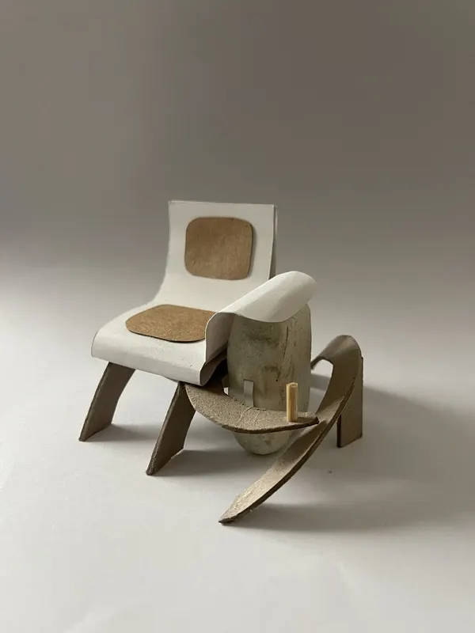

Six versions of one move: the open menu shutting back into its dot. Same markup and the same sizes as the site, only the closing differs. Click a panel to play that one, the buttons play all six, and the slower speeds are for watching the hand-over.

A work's photo and its lines of text run the full width of the screen here, and pass right under the words.